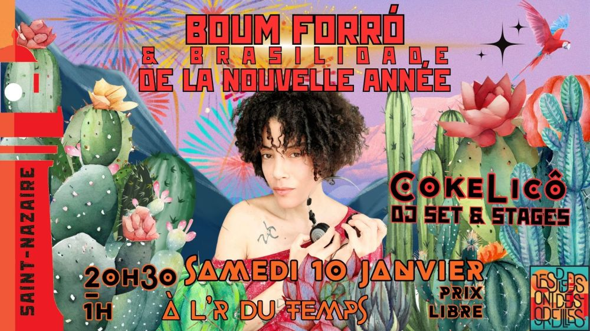

Boum forró de la nouvelle année avec DJ Cokelicô

🔥🔥🔥 BOUM FORRÓ DE LA NOUVELLE ANNÉE & BRASILIDADE🔥🔥🔥
🔥🌵ÉDITION ROOTS🌵🔥
💥 On démarre l’année en danse, en sueur et en joie 💥
Une soirée FORRÓ ROOTS et brasilidade organique, vibrante, enracinée…
et une invitée exceptionnelle aux platines :
🎧🌺🔥 DJ COKELICÔ 🔥🌺🎧
DJ, danseuse et passeuse de cultures, Cokelicô construit des sets organiques, dansants et sensibles, où le forró roots est le fil conducteur, entouré de brasilidades qui font respirer la piste :
🪗 forró pé de serra, baião, xote, xaxado,
🌺 touches de samba, funk, MPB,
🔥 une sélection pensée pour la danse, la connexion et le plaisir partagé.
Ici, on danse ensemble, proche du sol et des autres,
on alterne transe collective, sourires et moments suspendus.
📅 SAMEDI 10 JANVIER
🕣 20h30 – 1h⏰
📍 L’R du Temps🏠
❤️ Prix libre✨
🌞ET POUR PROLONGER LA VIBRATION ROOTS… 🌞
🌵🪗 STAGES FORRÓ ROOTS – AVEC COKELICÔ 🪗🌵
🔥 Intensif progression sur 6 cours 🔥
Plongez au cœur du forró roots, explorez la musicalité, la connexion et l’ancrage dans chaque pas.
Chaque cours dure 1h, idéal pour apprendre, pratiquer et progresser tout le week-end ! 💃🕺
📅 SAMEDI 10 JANVIER
🕑 14h00 – 15h00 : ROOTS 1
🕒 15h15 – 16h15 : ROOTS 2
🕓 16h30 – 17h30 : ROOTS 3
🕠 17h30 – 19h : Pratique libre guidée – Application en bal / exercices collectifs
📅 DIMANCHE 11 JANVIER
🕑 14h00 – 15h00 : ROOTS 4
🕒 15h15 – 16h15 : ROOTS 5
🕓 16h30 – 17h30 : ROOTS 6
🕠 17h30 – 19h : Pratique libre guidée – Mise en situation bal / feedback
Le détail des cours et la billeterie seront en ligne d’ici peu 🤷♀️
📍 Salle Avalix – 3 rue du Docteur Calmette, 44600 Saint-Nazaire
🥐💃 BRUNCH FORRÓ☕
📅 Dimanche 12h – 14h
Playlist forró, détente, danse douce, et café pour bien commencer la journée 🌞
🔥 Si tu aimes le forró roots, cette soirée est pour toi.
🔥 Si tu veux le découvrir, elle est pour toi aussi.
💃🕺 Vem dançar. Vem sentir. Vem vibrar.
Vidéos
Les vidéos sont hébergées par YouTube. Elles ne se chargent, et YouTube n'est contacté, qu'au moment où vous cliquez sur lecture.